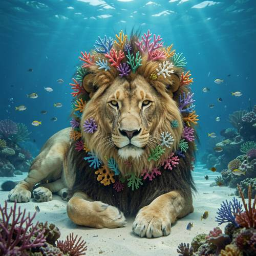
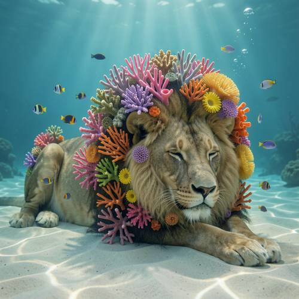
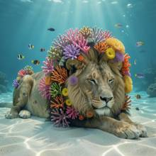

Compound — A lion lies quietly on the bottom of the sea. Its majestic mane is com
A lion lies quietly on the bottom of the sea. Its majestic mane is composed of colorful corals, and small fish are swimming safely around it.

Direct — one call, no iteration

Continuum — Kimi K3 + FLUX.2-klein-9B
Judge — Direct
FAILCompound - Feature Matching — The prompt requires the lion's mane to be 'composed of' colorful corals. In the image, the lion has a standard, hairy mane. Colorful corals are arranged within and around the mane, like a wreath or decoration, but the mane itself is made of hair, not coral.
PASSGrammar - Consistency — The prompt states that 'small fish are swimming safely around it,' with 'it' referring to the lion. The image visually depicts this by showing a lion on the seafloor with multiple small fish swimming in the water in its immediate vicinity.
Judge — Continuum
PASSCompound - Feature Matching — The image depicts a lion with a mane that is not made of hair. Instead, it is clearly composed of various types of corals in multiple colors, including pink, orange, purple, yellow, and green, which grow out from its neck and head area.
PASSGrammar - Consistency — The image shows multiple small, colorful fish swimming in the water surrounding the lion, which is the subject referred to by the pronoun 'it'. The fish are visible near the lion's head, back, and in the general vicinity.
What the agent did
Thinking
Generate an underwater scene: lion lying on sea floor, mane made of colorful corals, small fish swimming around. Use flux2-klein.
Step 1 — `generate_image`
{
"model": "flux2-klein",
"prompt": "A majestic lion lying quietly and peacefully on the sandy bottom of the sea, eyes half closed in calm rest. Its full mane is composed entirely of colorful living corals \u2014 branching staghorn corals, pink and purple sea fans, orange tube corals and yellow anemones \u2014 growing where the mane would be. Small colorful tropical fish swim safely around the lion and weave between the coral branches of its mane. Soft blue-green underwater light rays filter down from the surface, gentle caustics on the sand, a few bubbles rising. Photorealistic, cinematic underwater photography style, serene atmosphere."
}
Result img_0

Thinking
The image is very good: lion lying on sandy sea bottom, mane composed of colorful corals, small fish swimming around, light rays, bubbles. It matches the prompt well. Mark as best and stop.
Step 2 — `mark_best`
{
"image": "img_0",
"reason": "All prompt elements present and correct on first generation: lion lying calmly on the sandy sea floor, mane made of colorful corals, small fish swimming safely around it, underwater lighting with rays and bubbles."
}
Model
The first generation came out beautifully and matches every element of the prompt: - **Lion resting on the sea floor** — lying quietly on pale sand with a calm, half-closed-eyed expression - **Mane of colorful corals** — pink, purple, orange, and yellow branching corals and sea fans form the mane - **Small fish swimming safely around** — tropical fish weave all around the lion and between the coral branches - **Underwater atmosphere** — soft light rays from the surface, gentle caustics on the sand, and rising bubbles I've marked this as the final result. No further edits needed!